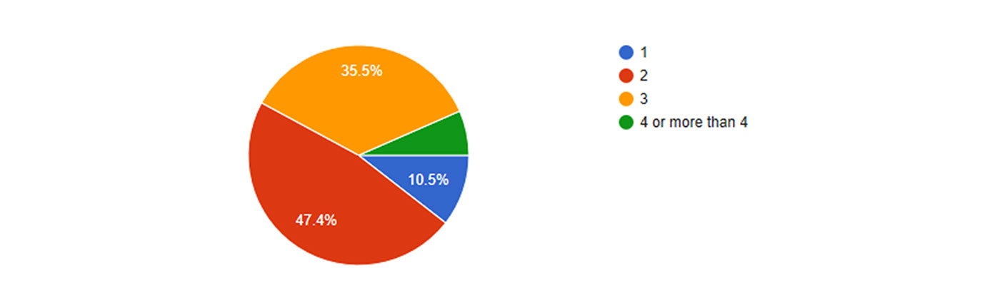
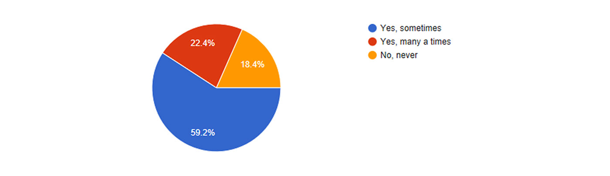
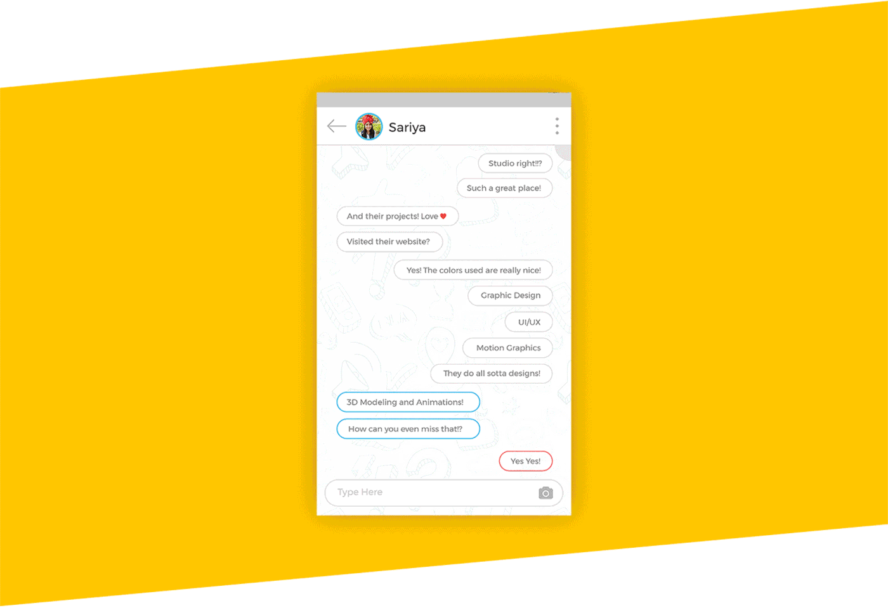
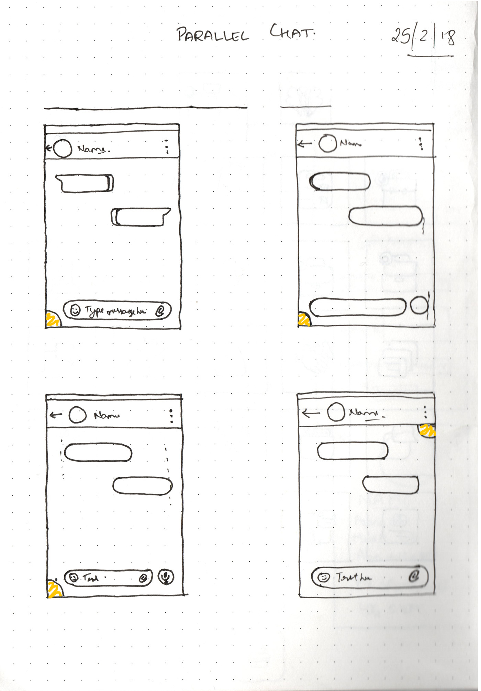
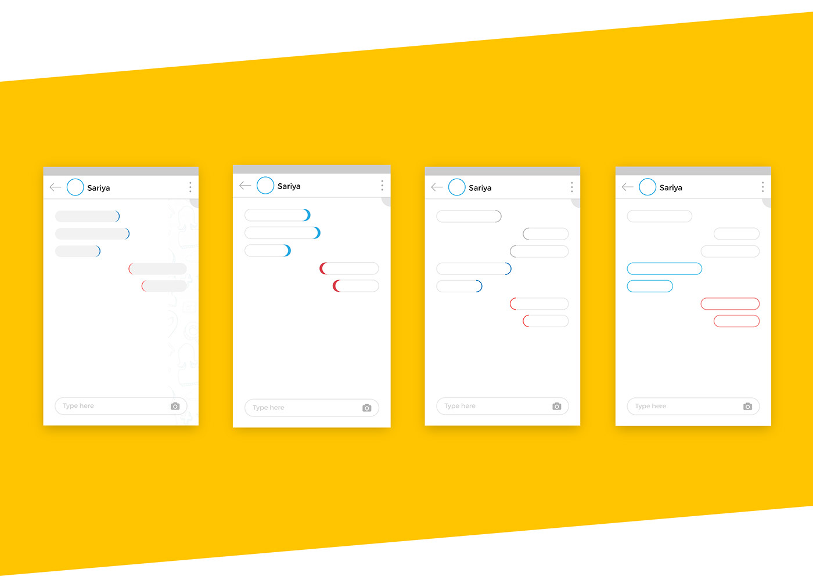
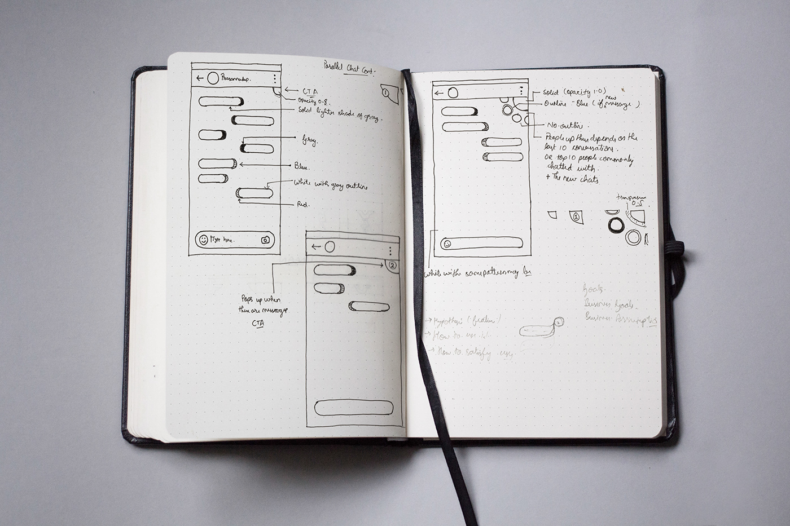

Research
A Google Survey was conducted to which 112 people responded. The questions asked were regarding the daily chat experiences.
1. What is the average number of people you chat with paralllely, at the same time?

2.Has it ever happened to you, that while chatting with two or more people, you were busy texting one, and accidentally forgot about the other(s)?

The Solution
According to a research-study, while using a messaging app, 90% of the time, the focus of the user is on the lower half of the screen, thus the upper half of the screen has a lot of space which can be used to introduce new elements/features.
Josh Clark, in his book Designing for Touch, states that 75% of interactions over mobile are thumb-driven. Thus keeping this in mind, the top-left corner of the screen can be hardly reached. The range we are left with is the triangle formed by the bottom-left, bottom-right and the top-right. As discussed above, the upper screen can be used for introducing a new element.
Thus I came to the conclusion that the space bellow the "options" (top-right), can be used to introduce the new element! A small grey clickable element, when clicked, would roll out a list of contacts the user had recently texted.
As a new message comes, a small clickable div rolls out from the right, showing the initial few words of the text received. The text then disappears after a few seconds and there is a change in the color of the element, thus reminding us of the new messages received.

Extra Edge
While I was trying to find out a solution to this problem, I realised that there was another minor problem that came up while chatting parallely. Everytime I switch chats, it took me time to find out which were the new messages and which were the one's I had had received earlier.
So I came up with this solution that the block of the older messages have gray border, and the block of the new messages have vibrant colors (The color depends on what the user choses).
Homework
First attempt, trying to find out the perfect layout, and where the new element can be placed.

Iterations for differentiation of the earlier received text from the one's received just now.

Finalisation of the new element, it's placement and it's functionality!
